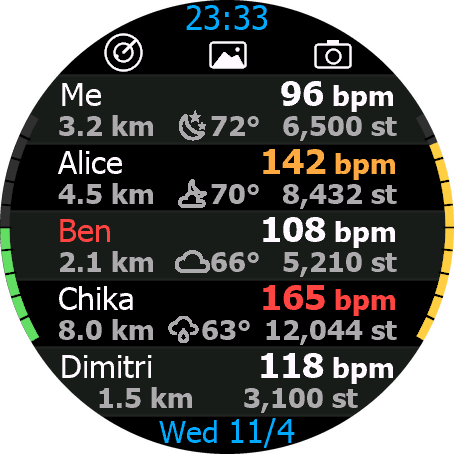
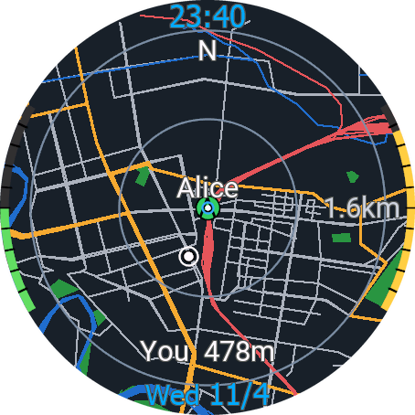

Pulse
Link
Stay together, and know everyone is safe. PulseLink opens on the people closest to you: their heart rate, steps, distance and weather, live on your Garmin wrist, with a map, a GPS radar and quick messages. You choose together what you show each other.
14-day free trial from the first time you open the app, then $9.99/year — no payment to start.


Open the app and see your people
No rooms to join and nothing to leave. PulseLink opens on the people you are connected with: their heart rate, steps, distance and weather, updating live. Tap a name to see them on the map.
Live heart rate
See each person's current heart rate, turning orange and red as it climbs.
Steps and distance
Today's steps and distance for everyone, at a glance.
Their weather
Temperature and weather where each person is.
Map
Tap a person to see them on a line map with roads, rivers and terrain, from 200 m to 100 km. Tap a group to see everyone.
Radar
A GPS radar on a compass shows your people and saved places: bearing, distance and how long ago each position came in. Navigate to points a big arrow at a place or a person.
Messages
Send a cheer with one tap from 20 templates you write yourself, or type your own. An incoming message appears as a banner, and one tap replies, so you never stop running.
Arrive and leave alerts
Your wrist buzzes when someone reaches or leaves a saved place: a child at school, for example.
Distance alerts
Know when someone drifts away, each time they pass a set distance from 100 m to 50 km, and when they come back.
Watch face and glance
Put the distance to the top person in your list in a data field of your watch's own face. It keeps updating about every 5 minutes, even with PulseLink closed. The glance shows the same person's name, distance, heart rate and steps.
You decide once, together
Sharing starts only when both people agree, and there are no switches to manage. The one who invites picks a level; the other reads one line and accepts or declines.
Activity
Steps, distance and weather.
+ Heart
Activity, plus heart rate.
+ Location
+ Heart, plus your position on the radar and the map. Your watch sends your position only when you have someone at this level.
Lower it any time
Either person can lower a level at once, with no approval. Raising it needs the other person's yes. Ending a connection takes one person.
Groups
Up to 20 people in a group, up to 10 groups. Everyone in a group sees each other at its level and talks together. No leader: anyone can lower the level, and only you can take yourself out.
Manual interval
Choose how often your watch sends, from 10 seconds to 10 minutes, or set Manual to send only when you press START.
A clock, a picture and your whole day
Beyond the people, PulseLink has screens of your own. Each can show a clock, and the look is set once for all of them.
Your picture
Send up to 5 pictures from the web and pick one on your watch. Turn the picture off for a clean black background.
16 values on one screen
Weather, pressure, wind, chance of rain, altitude, heart rate, steps, floors, calories, weight, Body Battery, stress, respiration, the moon, and the next sunrise or sunset.
Clock styles
Analog Hands, minimalist Rim marks, or a large Digital readout, in the color you choose, with an optional halo so it reads over any picture.
A camera on your wrist
Turn a spare phone into a still camera: a pet at home, the garden, the front door. Change the zoom and angle from your watch, get a buzz when something moves, and watch it big on any screen with the Viewer.
Battery Saver
After a few seconds with no touch, the screen dims to just the clock and date.
More than a running app — a way to stay connected
PulseLink isn't surveillance — it's a quiet way to stay connected with people you care about, by agreement, at a level you both chose.
Running friends
Friends training apart on the same morning share their effort live and cheer each other on with template messages.
Watching over family
An elderly parent on a daily walk, or a child on the way to school: family can quietly see they are moving, without a phone call.
Couples training apart
One at the gym, one out for a run: see each other's effort, exchange short messages, and feel like you are training together.
Race day support
One person racing, friends cheering from home: they see live heart rate and send encouragement mid-race.
Health buddies
Two or three friends keeping each other going on daily walks. Seeing "they're out there too" is enough motivation.
In the mountains
At + Location, see where your partner is on the map and radar, and get a nudge when you drift apart.
Your watch is your identity
Every Garmin watch carries a Device ID, and PulseLink uses it to tell one watch from another. Install the app and you can start straight away. The same ID is what links your phone camera and your watch face images to your watch.
Your watch is your login
On the watch, press START on the list and open Device ID to see your code. It never changes, even if you reinstall the app.
Watch face image
Enter that Device ID on the image page to send a picture of your own to your watch face — a photo or a drawing.
Open image page →Phone camera
The same Device ID turns a spare phone into a fixed camera that feeds your watch face.
Open camera page →All web tools
One page listing every companion page — image, camera, viewer, and data deletion — with where to find your Device ID.
See all tools →Up to 20 people
Designed for the people closest to you. The trial starts the first time you open the app, so you can start connecting straight away.
Share your ID
Both install the app. One person asks for the other's Device ID, shown on the watch.
Invite and accept
Enter the ID and choose a level. The other person gets an invitation on their watch and accepts it.
See each other
You appear in each other's lists, updating live on the interval you choose.
Cheer each other
Tap a template message to send a cheer or a warning.
Start with 14 days of everything
To connect with someone, you each need the full version or an active trial. It also adds the camera and the map.
- Connect with up to 19 people
- Up to 10 groups, up to 20 people each
- The map and radar with your people
- Messages, with 20 templates or free text
- Arrive and leave alerts for 10 saved places
- 5 picture slots
- A spare phone as a camera on your watch, and the Viewer
- The list, just for you
- The Image screen: clock and 16 live values
- 1 picture slot
- Radar with 1 saved place
- No connections, groups or map
- No phone camera, no Viewer
The full version in 4 steps
The 14-day free trial starts the first time you open the app. Updating from an earlier version without the full version? Your 14 days start the first time you open the new version. Buy before it ends and everything keeps going.
Find your Device ID
Open PulseLink on your watch, press START on the list and open Device ID. It shows an 8-character code like AB12-CD34, with your trial days or licence state.
Subscribe
Tap Subscribe above, pay $9.99/year via Stripe, and enter your Garmin Device ID at checkout. An activation key is emailed to you instantly.
Enter the key
Garmin Connect IQ app → PulseLink → Settings → paste the key into the "License Key" field.
Restart
Save settings and restart PulseLink on your watch. The full version stays unlocked as long as your subscription is active.
Cancel anytime via the Stripe Customer Portal (link in your activation email and Stripe receipt). Access continues until the end of the current billing period.
37 Garmin watches supported
Compatible with AMOLED-class displays (360px and up) across Forerunner, fēnix 8, epix, Venu, Vivoactive, MARQ, D2, Approach and Instinct. Watches without a touchscreen work with the buttons. Requires Connect IQ 4.2 or later.
How to activate
Subscribe
Complete payment via Stripe. Your activation email will be sent immediately.
Open the App
Open PulseLink on the watch. It identifies itself with its Device ID, so it is ready to use right away.
Customize Messages
Edit your 20 template messages from the same Settings screen. Empty slots are skipped on the watch.
Start Sharing
Save settings and restart PulseLink on your Garmin. Invite someone, or wait for an invitation.
Cancel anytime
Cancellation Policy: The PulseLink full version is an annual subscription that renews automatically. You can cancel anytime via the Stripe Customer Portal — link is included in your activation email and Stripe receipt. Your access continues until the end of the current billing period.
After cancellation or trial expiry, your watch returns straight away to just you: free, with no time limit. You keep the list, the Image screen and one saved place. Your connections and groups are removed, on the server as well, and purchasing later does not bring them back; you start again by inviting people.
Refund Policy: As PulseLink is a digital service activated by a license key, refunds are not provided once the activation email has been sent. If you experience activation issues, please contact and we'll resolve them promptly.
For any questions:
Powered by Stripe
All payments are processed by Stripe — the same payment infrastructure trusted by the world's largest companies.
Card data never touches our servers
Your card details are entered directly on Stripe's secure checkout. Easymoat never sees, stores, or transmits your card information.
Trusted at scale
Stripe powers payments for 62% of Fortune 500 companies, and 80% of the largest US software companies — including Amazon, Google, and Microsoft.
Real-time fraud protection
Stripe Radar — Stripe's machine learning fraud detection — blocked $2.3 billion in fraudulent transactions in 2025 alone.
Cancel in seconds
Stripe's Customer Portal lets you cancel your subscription in just a few clicks. No phone calls, no hidden steps, no friction.
Privacy & Health Data
PulseLink processes heart rate data, which is treated as a special category of personal data under GDPR. We collect only what is necessary: your watch's Device ID, a nickname, and the metrics you agree to show the people you connect with.
You can switch to Manual interval (no auto-send) at any time, lower a level, or end a connection. You can erase everything stored for your watch at any time from the Delete my data page.
For full details, please read our Privacy Policy and Terms of Service.